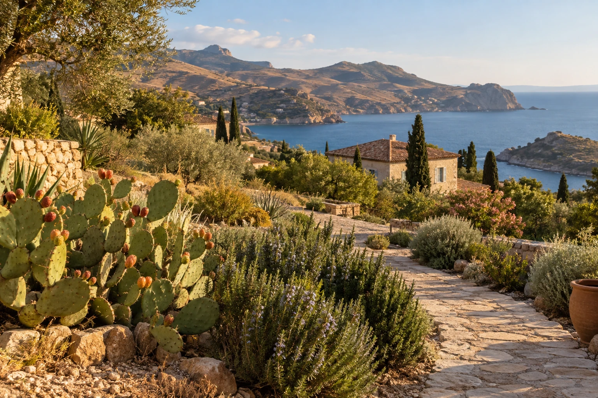
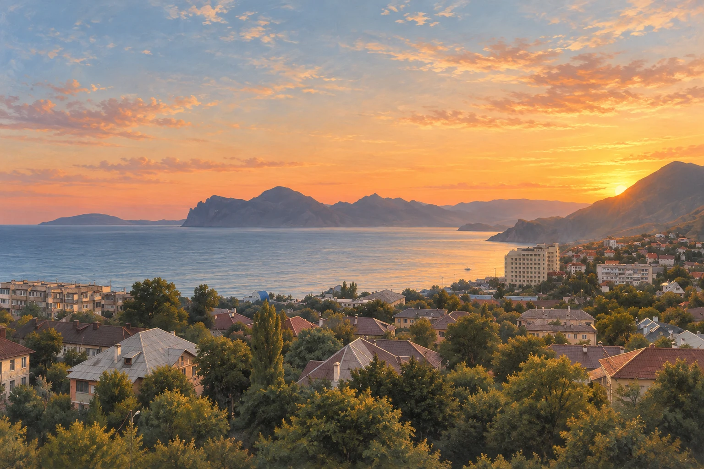

Участок ваш.
А документы?
Что на самом деле означает 1 января 2027 года и кому разумно проверить оформление земли заранее.
Земля, вода, дороги, документы и история места.
Разбираемся в том, что важно сегодня —
чтобы завтра не начинать заново.

Полезно сейчас. Понятно потом.
Что на самом деле означает 1 января 2027 года и кому разумно проверить оформление земли заранее.
Не про вечность. Про документы, схемы, решения и знания, которые слишком легко исчезают вместе с людьми.
Пока она течёт, труба невидима. Поэтому карту сети и историю ремонтов лучше собирать до следующей аварии.
Опубликованные правлением материалы
Документы появятся здесь после публикации в рабочей панели.
